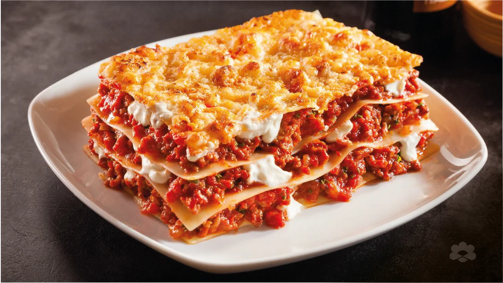

Home
Lasagna

Description
Lasagna is a classic Italian baked pasta dish known for its rich, layered structure, typically featuring flat, wide pasta sheets (also called lasagne) interspersed with various sauces, cheeses, and fillings.
Originating from Italy, it is a staple of comfort food worldwide, often featuring a base of bolognese meat sauce, creamy béchamel or ricotta cheese, and melted mozzarella.
Ingredients
- 1 pound lean ground beef
- 1 (32 ounce) jar spaghetti sauce
- 32 ounces cottage cheese
- 3 cups shredded mozzarella cheese, divided
- 2 eggs
- ½ cup grated Parmesan cheese
- 2 teaspoons dried parsley
- salt to taste
- ground black pepper to taste
- 9 lasagna noodles
- ½ cup water
Instructions
- Beef: This easy lasagna starts with ground beef. You can use ground turkey for a lighter option
- Spaghetti sauce: Use store-bought or homemade spaghetti sauce.
- Cheeses You’ll need cottage cheese, mozzarella, and Parmesan.
- Eggs: Eggs help bind the cheese mixture together. Plus, they lend moisture and richness.
- Seasonings: Season the easy lasagna with dried parsley, salt, and black pepper.
- Lasagna noodles:: Of course, you’ll need lasagna noodles!
- Water: Pour ½ cup of water around the edges of the baking dish before baking.